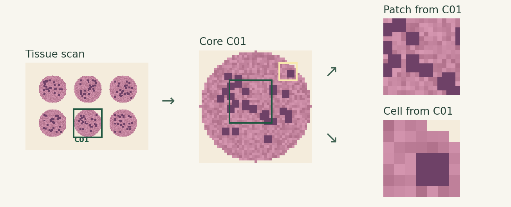

From tissue scan to model results
From tissue images to two research questions
Question and notes
Lymphoma tissue scans are expensive to process at full resolution. I built a way to extract the same tissue as a whole core, smaller patches, or individual cells. I then tested which views helped reproduce expert staining grades and predict the subtype labels supplied with the dataset.
Input
Lymphoma tissue images, expert staining grades and supplied subtype labels.

Output
Research notes- 2 prediction tasks
- 3 image scales
My doctoral thesis investigated how much useful information could be learned from images of diffuse large B-cell lymphoma tissue.
- Prepare the material. Could large scans be converted into labelled image regions and representations that were practical to store and process?
- Estimate expert scores. How closely could models using cells, patches or tissue cores match the supplied labelling scores?
- Compare subtype predictions. Which representations worked best for predicting supplied subtype labels, and which image features appeared important to those predictions?
These are different questions. Matching a supplied score or label tests agreement with that reference in the study design. The practical cost of preparing, storing and training on the inputs is a separate part of the comparison.
Source — Samuel Llanwarne, *Multi-Scale and Multi-Stage Deep Learning for the Classification of Diffuse Large B-cell Lymphoma Histology*, University of Leeds, 2026, Chapter 1.
What this step did
Sets out the grading and subtype questions, and the engineering problem of making the image data practical to work with.
Research goal and evidence
- Prepare the tissue images
Mark tissue cores, then build patch and cell views. Point-and-click halved the time per sample compared with drawing boxes in the thesis comparison.
- Make the data practical to process
Compress the patches and compare smaller representations while preserving a route back to the original images.
- Test what the images can predict
Keep related samples together when evaluating staining grades. Compare supplied subtype labels as a separate task.
- Check what the results support
Test model changes, preserve the findings that did not give a clear advantage, and identify what a separate cohort would need to establish.

![Example grading error bars by image scale](data:image/svg+xml,%3Csvg%20xmlns%3D%22http%3A%2F%2Fwww.w3.org%2F2000%2Fsvg%22%20viewBox%3D%220%200%20680%20261%22%20role%3D%22img%22%3E%0A%3Ctitle%3EMean%20absolute%20grading%20error%20%28synthetic%20rerun%29%3C%2Ftitle%3E%0A%3Crect%20width%3D%22100%25%22%20height%3D%22100%25%22%20rx%3D%228%22%20fill%3D%22%23f8f6ed%22%2F%3E%0A%3Cg%20font-family%3D%22system-ui%2C%20sans-serif%22%20fill%3D%22%23243e31%22%3E%0A%3Ctext%20x%3D%2224%22%20y%3D%2233%22%20font-size%3D%2221%22%3EMean%20absolute%20grading%20error%3C%2Ftext%3E%0A%3Ctext%20x%3D%2224%22%20y%3D%2255%22%20font-size%3D%2213%22%3ESynthetic%20rerun%20%C2%B7%20lower%20is%20better%3C%2Ftext%3E%0A%3Ctext%20x%3D%2224%22%20y%3D%2290%22%20font-size%3D%2215%22%3ECore%3C%2Ftext%3E%0A%3Crect%20x%3D%22142%22%20y%3D%2272%22%20width%3D%22330%22%20height%3D%2224%22%20rx%3D%223%22%20fill%3D%22%23e2e8dc%22%2F%3E%0A%3Crect%20x%3D%22142%22%20y%3D%2272%22%20width%3D%22288.7%22%20height%3D%2224%22%20rx%3D%223%22%20fill%3D%22%23527c67%22%2F%3E%0A%3Ctext%20x%3D%22490%22%20y%3D%2290%22%20font-size%3D%2214%22%3E0.350%20%28n%3D6%29%3C%2Ftext%3E%0A%3Ctext%20x%3D%2224%22%20y%3D%22127%22%20font-size%3D%2215%22%3EPatch%3C%2Ftext%3E%0A%3Crect%20x%3D%22142%22%20y%3D%22109%22%20width%3D%22330%22%20height%3D%2224%22%20rx%3D%223%22%20fill%3D%22%23e2e8dc%22%2F%3E%0A%3Crect%20x%3D%22142%22%20y%3D%22109%22%20width%3D%22198.0%22%20height%3D%2224%22%20rx%3D%223%22%20fill%3D%22%23527c67%22%2F%3E%0A%3Ctext%20x%3D%22490%22%20y%3D%22127%22%20font-size%3D%2214%22%3E0.240%20%28n%3D6%29%3C%2Ftext%3E%0A%3Ctext%20x%3D%2224%22%20y%3D%22164%22%20font-size%3D%2215%22%3ECell%3C%2Ftext%3E%0A%3Crect%20x%3D%22142%22%20y%3D%22146%22%20width%3D%22330%22%20height%3D%2224%22%20rx%3D%223%22%20fill%3D%22%23e2e8dc%22%2F%3E%0A%3Crect%20x%3D%22142%22%20y%3D%22146%22%20width%3D%22264.0%22%20height%3D%2224%22%20rx%3D%223%22%20fill%3D%22%23527c67%22%2F%3E%0A%3Ctext%20x%3D%22490%22%20y%3D%22164%22%20font-size%3D%2214%22%3E0.320%20%28n%3D6%29%3C%2Ftext%3E%0A%3Cpath%20d%3D%22M142%20183h330%22%20stroke%3D%22%23718477%22%2F%3E%0A%3Cpath%20d%3D%22M142%20183v5%22%20stroke%3D%22%23718477%22%2F%3E%0A%3Ctext%20x%3D%22142%22%20y%3D%22206%22%20text-anchor%3D%22middle%22%20font-size%3D%2213%22%3E0%3C%2Ftext%3E%0A%3Cpath%20d%3D%22M307%20183v5%22%20stroke%3D%22%23718477%22%2F%3E%0A%3Ctext%20x%3D%22307%22%20y%3D%22206%22%20text-anchor%3D%22middle%22%20font-size%3D%2213%22%3E0.2%3C%2Ftext%3E%0A%3Cpath%20d%3D%22M472%20183v5%22%20stroke%3D%22%23718477%22%2F%3E%0A%3Ctext%20x%3D%22472%22%20y%3D%22206%22%20text-anchor%3D%22middle%22%20font-size%3D%2213%22%3E0.4%3C%2Ftext%3E%0A%3Ctext%20x%3D%22307%22%20y%3D%22231%22%20text-anchor%3D%22middle%22%20font-size%3D%2213%22%3EGrade%20points%3C%2Ftext%3E%0A%3C%2Fg%3E%3C%2Fsvg%3E)